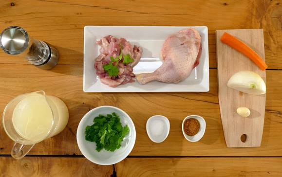
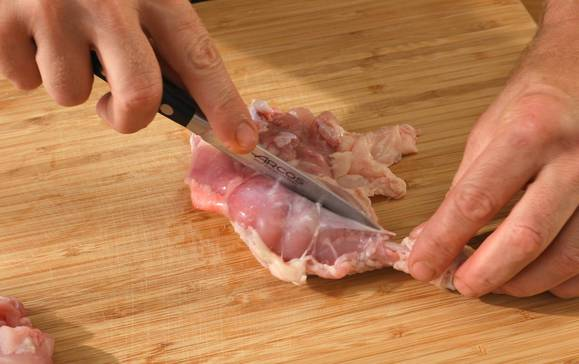
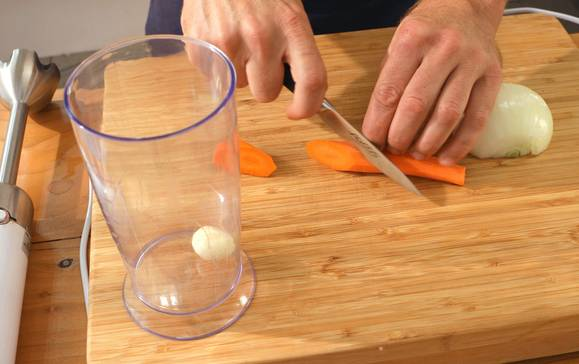
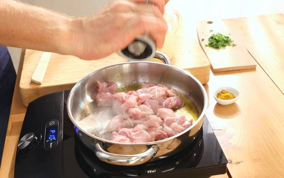
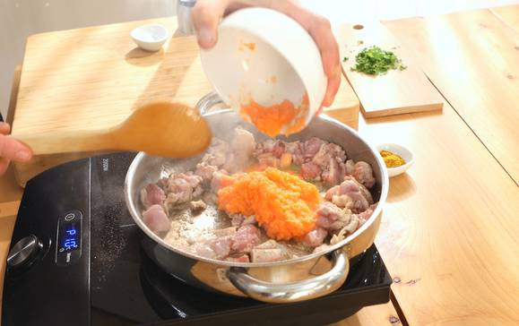
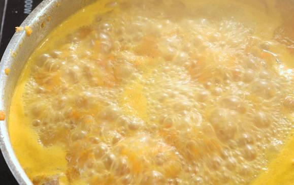
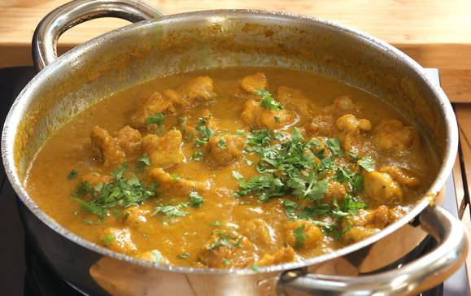

Ingredientes
-
2 de muslos de pollo
-
1/2 litro de caldo de pollo
-
1/2 de cebolla
-
1 de zanahoria
-
1 de ajo
-
perejil
-
sal
-
pimienta negra
-
1 cucharadita de curry
-
aceite de oliva

Paso a Paso
-
Deshuesa los muslos de pollo y trocea la carne.

-
Pela la zanahoria y córtala en rodajas. Pela la cebolla y córtala en trozos grandes. Pon la cebolla, la zanahoria y el diente de ajo pelado en el vaso de la batidora y tritura.

-
Pon una cazuela al fuego con un chorrito de aceite de oliva. Cuando empiece a calentarse el aceite, agrega el pollo, una pizca de sal y pimienta negra molida. Remueve y deja saltear.

-
Añade el puré de verduras, remueve todo y rehoga 2 minutos más.

-
Incorpora el curry en polvo y remueve. Vierte la mitad del caldo de pollo y cuando rompa a hervir, añade el resto de caldo. Deja que se cocine a fuego medio hasta que se reduzca 3/4 partes.

-
Añade el perejil picado y remueve.

-
Retira la cazuela del fuego y sirve el pollo al curry. Acompáñalo con un poco de arroz basmati.

Resultado final
El final, o una imagen como quedaria este plato sería tal que así: